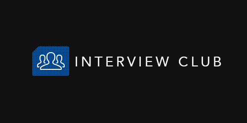

Staff Software Engineer | Ex-Google
Projects > Interview Club

Two-sided marketplace connecting skilled engineers with companies needing technical interview services. Built in 48 hours at the 2015 LAUNCH Hackathon — finalist, won over $10,000 in prizes.